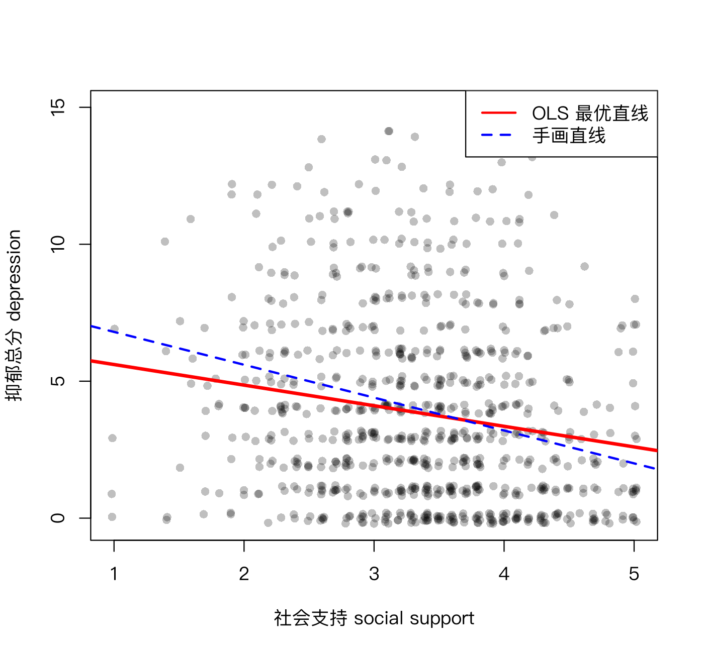

简单线性回归：用一条直线做预测
本课学习目标
- 解释截距、斜率、残差和 R²
- 理解“最小二乘法”就是让残差平方和最小（用你学过的求导直觉）
- 在 R 中用 lm() 拟合并读懂输出
核心概念
- 回归regression
- 自变量/预测变量predictor
- 因变量/结果变量outcome
- 截距intercept
- 斜率/回归系数slope / coefficient
- 残差residual
- 最小二乘法ordinary least squares, OLS
- 决定系数R²
本课结构：直觉 → 最少数学 → R 代码 → 理解检查 → 练习 → 小结。文中的交互图示可拖动或点击；测验答错会先给提示，答错两次可查看解析。
① 直觉穿过点云，画一条“最好”的直线
社工站计划为社会支持低的居民开展“邻里互助”小组。立项前，督导想知道：在我们的数据里，社会支持每高 1 分，抑郁总分平均会低多少？1.4 课相关矩阵里的 r = −0.18 告诉我们“有负相关、比较弱”，但没有回答“低多少分”。回答这个问题的工具是回归（regression）：用一条直线概括“X 变化时，Y 平均怎样变化”。
在回归里，用来预测的变量叫自变量/预测变量（predictor）（这里是社会支持，记作 x），被预测的叫因变量/结果变量（outcome）（抑郁，记作 y）。一条直线由两个数确定：
- 截距（intercept） \(b_0\)：x = 0 时直线的高度（直线和纵轴的交点）。
- 斜率/回归系数（slope / coefficient） \(b_1\)：x 每增加 1 个单位，预测的 y 变化多少。这是我们最关心的数。
对每个人，直线给出一个“预测值” \(\hat y\)；实际值 \(y\) 和预测值之差叫残差（residual）：\(e = y - \hat y\)。残差就是直线“没猜中”的部分：点在直线上方，残差为正；在下方，为负。
什么是“最好”的直线？
直线可以画无数条。我们需要一个标准。最常用的标准是：让所有残差的平方加起来最小。这叫最小二乘法（ordinary least squares, OLS）（“二乘”就是“平方”的旧称）。为什么是平方？和 1.2 课的方差同一个理由：去掉正负号，并且让“猜得特别离谱”的点付出更大的代价。
请先自己拖动两个滑块，试着让残差平方和（SSE）尽量小；勾选“画出残差平方”可以看到每个点贡献的橙色正方形。然后再点“显示最小二乘解”看看你离最优有多远。下方的小图画的是：当斜率取不同值时 SSE 的大小。它是一条碗形曲线，最低点处切线水平，也就是“导数等于 0 的地方是极值点”。
斜率怎么读：一个“平均意义上”的说法
课程数据中，用社会支持（1–5 分）预测 T1 抑郁总分（0–15 分），R 给出：
- 斜率 −0.75：社会支持每高 1 分，预测的抑郁总分平均低 0.75 分。比如社会支持 2 分的人，预测抑郁 = 6.36 − 0.75 × 2 ≈ 4.86；社会支持 4 分的人，预测 ≈ 3.35。
- 截距 6.36：社会支持 = 0 时的预测值。但量表最低是 1 分，没有人得 0 分，截距只是让直线“定位”的数学参数，不应解读为“完全没有社会支持的人抑郁 6.36 分”。在数据范围之外的预测叫外推（extrapolation），要非常小心：样本里社会支持在 1–5 分之间，用这条线去预测 0 分或 8 分的人都没有根据。想让截距有意义，可以先把 x 中心化（减去均值），截距就变成“社会支持处于平均水平的人”的预测值。
“社会支持每高 1 分，抑郁平均低 0.75 分”描述的是人与人之间的比较：社会支持高 1 分的那群人，平均抑郁低 0.75 分。它不等于“如果给某个人增加 1 分社会支持，他的抑郁会降低 0.75 分”。后一种说法是因果的、个人内部的，需要干预研究。这个区分在 4.1 课（被试间 vs 被试内）和 5.4 课会再次出现。
R²：直线解释了多少差异？
如果完全不用 x，最好的猜法是“人人都猜平均数 \(\bar y\)”，此时的误差平方和叫总平方和（SST）。用了回归直线后，误差变成 SSE。直线“消除”的那部分比例就是决定系数（R²）：
课程数据中 R² = 0.031：社会支持只解释了抑郁差异的约 3%。这是否说明模型“没用”？不一定：
- 人的心理状态受成百上千种因素影响，单个预测变量能解释 3%–10% 在心理和社会研究中很常见；
- R² 小不等于斜率不重要：在全人群层面，平均 0.75 分的差异也可能有政策意义；
- 但 R² 小确实意味着：用社会支持去预测某一个人的抑郁，会很不准（个体之间散布得很开）。
在简单回归（只有一个 x）里有一个好记的事实：\(R^2 = r^2\)。这里 \((-0.175)^2 \approx 0.031\)。
为什么要看残差图？
回归直线总能画出来，但它是否“合适”？看残差：以预测值为横轴、残差为纵轴画散点图，R 里是 plot(fit, which = 1)（见下面的代码）。理想情况下应该是一团在 0 上下随机散布、宽度大致不变的点。如果看到弧形（关系其实是曲线）、喇叭口（预测值越大残差越分散，误差大小随预测值变化，标准误可能不准确），或几个离得很远的点（极端值），就说明直线模型可能不够好。我们的抑郁数据是右偏的、有大量 0 分，残差图会出现明显的“条纹”和不对称，这在李克特数据中很常见。这时报告结果要更谨慎，可以改用稳健标准误，并在论文中说明这一局限。
② 最少数学用求导找到最好的 b₀ 和 b₁
- \(\hat y_i\)
- 第 \(i\) 个人的预测值（“y 帽”）。
- \(b_0, b_1\)
- 待求的截距和斜率。
- \(SSE\)
- 残差平方和（sum of squared errors），是 \(b_0,b_1\) 的函数：换一条线，SSE 就变。
要让 SSE 最小，对两个未知数分别求偏导（把另一个当常数），令其等于 0：
“\(\partial\)”读作“偏”，偏导数就是“只让一个变量动、其他不动时”的导数，求法和普通求导一样（这里用了链式法则）。解这两个方程，得到：
三个值得记住的推论：
- 斜率 = 协方差 / X 的方差：回归系数和相关系数关系密切，区别只在量尺。如果 X 和 Y 都标准化了（\(s_X=s_Y=1\)），斜率就等于相关系数 r（3.3 课）。
- 第一个方程说明 \(\sum e_i = 0\)：OLS 直线的残差加起来恰好为 0；而且直线一定穿过点 \((\bar x, \bar y)\)。
- 1.2 课的微积分补充是这里的特例：没有 x 时（只有 \(b_0\)），最优的 \(b_0\) 就是 \(\bar y\)。
课程数据验证：\(\operatorname{cov}/\operatorname{var} = -0.7519\)，\(\bar y - b_1\bar x = 6.3604\)，与 lm() 输出完全一致。
③ R 代码lm()：线性模型
对应脚本：R/L3-1.R。
source("R/_setup.R")
dat <- read_course_data()
dat$dep_sum_t1 <- rowSums(dat[, paste0(dep_items, "_t1")])
fit <- lm(dep_sum_t1 ~ social_support_t1, data = dat) # lm = linear model；~ 读作“被……预测”
summary(fit)Call:
lm(formula = dep_sum_t1 ~ social_support_t1, data = dat)
Residuals:
Min 1Q Median 3Q Max
-5.6085 -2.7286 -0.7286 2.0458 11.5722
Coefficients:
Estimate Std. Error t value Pr(>|t|)
(Intercept) 6.3604 0.5163 12.320 < 2e-16 ***
social_support_t1 -0.7519 0.1497 -5.023 6.27e-07 ***
---
Signif. codes: 0 ‘***’ 0.001 ‘**’ 0.01 ‘*’ 0.05 ‘.’ 0.1 ‘ ’ 1
Residual standard error: 3.348 on 798 degrees of freedom
Multiple R-squared: 0.03065, Adjusted R-squared: 0.02944
F-statistic: 25.23 on 1 and 798 DF, p-value: 6.273e-07输出逐块读（2.5 课已经带你读过一遍）：
- Residuals：残差的五数概括。中位数 −0.73 < 0、最大值 11.57 远大于最小值的绝对值 5.61，说明残差右偏，与抑郁分布右偏一致。
- Coefficients 表：
Estimate是 \(b_0, b_1\)；Std. Error是它们的标准误（1.5 课）；t value= Estimate / Std. Error（1.6 课）；Pr(>|t|)是 p 值。斜率 −0.75，SE 0.15，p ≈ 6 × 10⁻⁷。 - Residual standard error: 3.348：残差的标准差，表示预测值的典型误差约为 3.3 分。
- Multiple R-squared: 0.03065：R²。Adjusted R² 对预测变量的个数做了一点惩罚（3.2、3.5 课）。
cat("OLS 直线的残差平方和 RSS =", round(sum(resid(fit)^2), 1), "\n")
rss_guess <- sum((dat$dep_sum_t1 - (8 - 1.2 * dat$social_support_t1))^2)
cat("“手画”直线 y = 8 - 1.2x 的 RSS =", round(rss_guess, 1), "（一定 ≥ OLS）\n")
predict(fit, newdata = data.frame(social_support_t1 = c(2, 4))) # 社会支持为 2 和 4 时的预测值
plot(fit, which = 1) # 残差 vs 预测值OLS 直线的残差平方和 RSS = 8942.8
“手画”直线 y = 8 - 1.2x 的 RSS = 9057.9 （一定 ≥ OLS）
1 2
4.856545 3.352655
y ~ xR 里 ~（波浪号）左边是结果变量、右边是预测变量。多元回归就是在右边用 + 加更多变量：y ~ x1 + x2 + x3（下一课）。这个语法在 glm()（3.4 课）、lavaan（5.2 课）中都会用到。
完整例题：手算一条回归线
沿用 1.4 课的 5 个人：x（孤独）= 1、2、3、4、5，y（抑郁）= 2、4、5、4、5。已算得协方差 1.5，x 的方差 2.5。
- 斜率 b₁ = cov(x, y) / var(x) = 1.5 / 2.5 = 0.6。
- 截距 b₀ = ȳ − b₁ x̄ = 4 − 0.6 × 3 = 2.2。回归线是 ŷ = 2.2 + 0.6x。
- 预测值依次为 2.8、3.4、4.0、4.6、5.2；残差（y − ŷ）为 −0.8、0.6、1.0、−0.6、−0.2，加起来正好是 0。
- 残差平方和 = 0.64 + 0.36 + 1 + 0.36 + 0.04 = 2.4；总平方和 = 6，所以 R² = 1 − 2.4/6 = 0.6，正好等于 r² = 0.775²。
在 R 中验证：lm(y ~ x) 会给出截距 2.2、斜率 0.6。lm() 做的就是找残差平方和最小的那条线。
- 以为“x 预测 y”的斜率倒过来就是“y 预测 x”的斜率。反过来回归的斜率是 cov / var(y)，一般不等于 1/b₁。上例中 y 对 x 的斜率是 0.6，x 对 y 的斜率是 1.5 / 1.5 = 1.0，而不是 1/0.6 ≈ 1.67。两者的乘积等于 r² = 0.6。
- 把斜率大小当成关系强弱。b₁ 依赖单位：生活满意度用 0–100 分和用 0–10 分，斜率差 10 倍。比较强弱要看 r 或标准化系数（3.3 课）。
④ 理解检查即时测验
用“社会支持”预测“抑郁得分”，斜率 b₁ = −0.4。它的含义是？
- 斜率与相关只有在两者都标准化时才相等；这里是原始单位的斜率。
- 正确。
- 这是本课提醒的误读：它是因果的、个人内部的说法，而斜率描述的是人与人之间的比较。
- 解释比例是 R²，不是斜率；斜率的单位是“抑郁分 / 社会支持分”。
直线 ŷ = 6.36 − 0.75x。社会支持 x = 3 时，预测的抑郁总分是多少？（保留两位小数）
R² = 0.09 是否意味着这个模型“没用”？
- 没有这样的界线；心理社会研究中单个预测变量的 R² 常在 3%–10%。
- 正确。
- 大样本中 R² 很小也可能显著：课程数据中 R² = 0.031，斜率的 p ≈ 6 × 10⁻⁷。
残差是什么？
- 正确：e = y − ŷ。
- 方向反了：残差定义为实际值减预测值，点在直线上方时残差为正。
- 那是 y 的离均差，是“不用 x、人人猜平均数”时的误差，用来算 SST。
- 那是所有残差的“标准差”，概括残差的典型大小；残差是每个人各有一个。
如果 X 和 Y 都已标准化（均值 0、SD 1），简单回归的斜率等于什么？
- 标准化后均值为 0 的是截距，不是斜率；斜率 = r · s_Y / s_X。
- 正确：此时 s_Y / s_X = 1。
- 那是 r 的平方，没有方向；斜率可以是负数。
- 两个变量的 SD 都是 1，不等于斜率是 1；只有完全正相关时斜率才是 1。
为什么最小二乘法能用“求导令其为 0”的方法找到最优解？
- 并非如此：函数要光滑（可导），且导数为 0 的点也可能是最大值或拐点；SSE 是碗形，所以这里正好是最小值。
- 正确。
- 残差之和为 0 只是对 b₀ 求偏导得到的一个条件；还要同时满足对 b₁ 的条件，SSE 才最小。
⑤ 练习动手练习
练习 3.1-A：先手画，再 lm()
用课程数据，以 social_support_t1 预测 T1 抑郁总分：(1) 先运行下面的代码画散点图，用尺子在打印出来的图上（或在脑子里）画一条你认为最好的直线，读出它的截距和斜率；(2) 计算你的直线的残差平方和；(3) 用 lm() 得到最优直线，比较两者的 RSS。
source("R/_setup.R")
dat <- read_course_data()
dat$dep_sum_t1 <- rowSums(dat[, paste0(dep_items, "_t1")])
plot(jitter(dat$social_support_t1), jitter(dat$dep_sum_t1), pch = 16, col = rgb(0, 0, 0, .25))
my_b0 <- 7; my_b1 <- -1 # ← 换成你自己读出的数
sum((dat$dep_sum_t1 - (my_b0 + my_b1 * dat$social_support_t1))^2)参考答案
OLS：截距 6.36、斜率 −0.75、RSS = 8942.8。你的直线的 RSS 一定 ≥ 8942.8（等号仅在你恰好画出 OLS 直线时成立）。很多人手画的直线会比 OLS 更陡。原因不是少数高分点，而是人眼倾向于沿着点云的“长轴”画线，画出来的接近 SD 线（SD line）（斜率 = ±sy/sx，穿过两个均值）或主轴（让点到直线的垂直距离最小）。OLS 只让竖直方向的残差最小，它的斜率是 r·sy/sx；只要 |r| < 1，它的绝对值就比 SD 线小，看起来更“平”。这也是“回归向均值”的另一种说法：x 高 1 个 SD 的人，y 平均只高（或低）|r| 个 SD。写一句话解释：OLS 直线之所以“最好”，只是在“残差平方和最小”这个特定标准下最好。
练习 3.1-B：读输出、写句子
根据上面的 summary(fit) 输出，写 2–3 句结果报告，包括斜率、标准误或 p 值、R²，并避免因果化用词。
参考写法
“社会支持显著负向预测抑郁总分，b = −0.75，SE = 0.15，p < .001：社会支持每高 1 分，抑郁总分平均低 0.75 分。但社会支持仅解释了抑郁差异的 3.1%（R² = .031），提示还有大量其他因素与抑郁有关。”
练习 3.1-C：手算（纸笔）
4 个人：x = 1, 2, 3, 4；y = 2, 4, 5, 5。计算 OLS 的 \(b_1\) 和 \(b_0\)，并写出每个人的残差，验证残差之和为 0。
参考答案
\(\bar x = 2.5,\ \bar y = 4\)。离均差 x：−1.5, −0.5, 0.5, 1.5；y：−2, 0, 1, 1。乘积和 = 3 + 0 + 0.5 + 1.5 = 5；x 离均差平方和 = 2.25 + 0.25 + 0.25 + 2.25 = 5。\(b_1 = 5/5 = 1\)，\(b_0 = 4 - 1\times2.5 = 1.5\)。预测值 2.5, 3.5, 4.5, 5.5；残差 −0.5, 0.5, 0.5, −0.5，和 = 0 。（\(b_1\) 用“协方差/方差”时，分子分母的 n − 1 相互抵消，所以直接用离均差乘积和 / 离均差平方和即可。）
小结带走三句话
- 回归直线 ŷ = b₀ + b₁x；斜率 = x 每增 1 单位，预测的 y 平均变化多少。
- OLS = 让残差平方和最小；用偏导数为 0 求解，得 b₁ = cov / var(x)。
- R² = 被直线解释的差异比例；R² 小不等于斜率无意义。下一课：3.2 多元回归与“控制其他变量”。
CLPN 从零开始 · 第 3.1 课 · 返回大纲